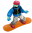

I grew up in Satellite Beach, Florida, where life revolved around the ocean. Surfing taught me something early — flow matters. The best experiences feel natural. They don't fight you. They guide you.
Years later I found that same feeling in competitive bowling, snowboarding, skateboarding, and eventually UX design. I started bowling competitively at 13 and trained weekly for over a decade. I rode my first snowboard as a kid and never stopped. I skate. I surf. I build things.
Today I design and build digital experiences that help people navigate complex information with clarity and confidence. That's the through line — whether it's a snowboard, a bowling ball, or a website, I'm obsessed with how people move through systems.
A decade of training. Understanding systems, equipment, and performance under pressure.
Where it started. Reading conditions, adapting in real time, chasing the right line.
Aggressive riding in Utah. Progression, commitment, and reading terrain.
Repetition, failure, mastery. The same loop that drives everything I do.
I start by understanding people, behaviors, and decision-making patterns before jumping into solutions.
I translate complexity into systems, frameworks, and experiences that are easier to understand and navigate.
I build and implement those experiences through front-end development, interaction design, and motion systems.
Most people don't struggle because information doesn't exist. They struggle because information is difficult to navigate, compare, and understand.
My job is to bridge that gap. That's what my Storm work is at its core — navigation, education, decision support, information architecture, and product understanding.
The same problems I've spent my life solving on a wave, a lane, or a mountain.
How people move through information the same way they move through physical space.
Experiences that feel natural — that guide without fighting.
Reducing friction at the moments that matter most.
The same loop that drives progression on a board or a lane drives great design.
This isn't a hobbies section. This is identity.


I don't believe great work appears by accident. Nothing worth having comes without putting in the time.
I stick with problems long after most people quit — whether it's debugging something messy or landing a trick for the hundredth time.
Consistency beats motivation. Showing up every day — even when it's hard — is what separates good from great.
